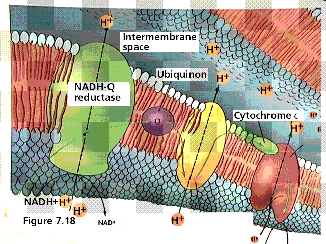
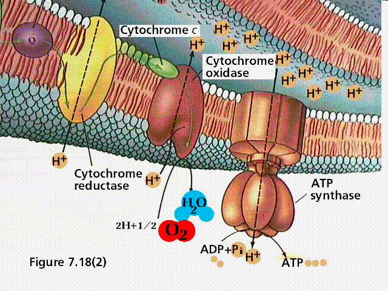

Table of Contents
The Nature of ATP | How to Make ATP | Learning Objectives | Terms | Links
Adenosine triphosphate (ATP), the energy currency or coin of the cell pictured in Figfures 1 and 2, transfers energy from chemical bonds to endergonic (energy absorbing) reactions within the cell. Structurally, ATP consists of the adenine nucleotide (ribose sugar, adenine base, and phosphate group, PO4-2) plus two other phosphate groups.
Figure 1. A 2-D stick view of the
structure of ATP. The above drawing of ATP is from EcoCyc at
http://hapuna.ai.sri.com:1555/new-image?type=COMPOUND-IN-PATHWAY&object=ATP Figure 2. A
cartoon and space-filling view of ATP.
Image from Purves et al., Life: The
Science of Biology, 4th Edition, by Sinauer Associates
(www.sinauer.com)
and WH Freeman (www.whfreeman.com),
used with permission.
Energy is stored in the covalent bonds between phosphates, with the greatest amount of energy (approximately 7 kcal/mole) in the bond between the second and third phosphate groups. This covalent bond is known as a pyrophosphate bond.
We can write the chemical reaction for the formation of ATP as:
a) in chemicalese: ADP + Pi + energy ----> ATP
b) in English: Adenosine diphosphate + inorganic Phosphate + energy produces Adenosine Triphosphate
The chemical formula for the expenditure/release of ATP energy can be written as:
a) in chemicalese: ATP ----> ADP + energy + Pi
b) in English Adenosine Triphosphate produces Adenosine diphosphate + energy + inorganic Phosphate
An analogy between ATP and rechargeable batteries is appropriate. The batteries are used, giving up their potential energy until it has all been converted into kinetic energy and heat/unusable energy. Recharged batteries (into which energy has been put) can be used only after the input of additional energy. Thus, ATP is the higher energy form (the recharged battery) while ADP is the lower energy form (the used battery). When the terminal (third) phosphate is cut loose, ATP becomes ADP (Adenosine diphosphate; di= two), and the stored energy is released for some biological process to utilize. The input of additional energy (plus a phosphate group) "recharges" ADP into ATP (as in my analogy the spent batteries are recharged by the input of additional energy).
Two processes convert ADP into ATP: 1) substrate-level phosphorylation; and 2) chemiosmosis. Substrate-level phosphorylation occurs in the cytoplasm when an enzyme attaches a third phosphate to the ADP (both ADP and the phosphates are the substrates on which the enzyme acts). This is illustrated in Figure 3.
Figure 3. Enzymes and the formation of
NADH and ATP. Images from Purves et al., Life: The
Science of Biology, 4th Edition, by Sinauer Associates
(www.sinauer.com)
and WH Freeman (www.whfreeman.com),
used with permission.
Chemiosmosis, shown in Figure 4, involves more than the single enzyme of substrate-level phosphorylation. Enzymes in chemiosmotic synthesis are arranged in an electron transport chain that is embedded in a membrane. In eukaryotes this membrane is in either the chloroplast or mitochondrion. According to the chemiosmosis hypothesis proposed by Peter Mitchell in 1961, a special ATP-synthesizing enzyme is also located in the membranes. Mitchell would later win the Nobel Prize for his work.
Figure 4. A typical representation of an
electron transport chain.
Images from Purves et al., Life:
The Science of Biology, 4th Edition, by Sinauer
Associates (www.sinauer.com)
and WH Freeman (www.whfreeman.com),
used with permission.  
During chemiosmosis in eukaryotes, H+ ions are pumped across an organelle membrane by membrane "pump proteins" into a confined space (bounded by membranes) that contains numerous hydrogen ions. This is shown in Figure 4 and 5. The energy for the pumping comes from the coupled oxidation-reduction reactions in the electron transport chain. Electrons are passed from one membrane-bound enzyme to another, losing some energy with each tansfer (as per the second law of thermodynamics). This "lost" energy allows for the pumping of hydrogen ions against the concentration gradient (there are fewer hydrogen ions outside the confined space than there are inside the confined space). The confined hydrogens cannot pass back through the membrane. Their only exit is through the ATP synthesizing enzyme that is located in the confining membrane. As the hydrogen passes through the ATP synthesizing enzyme, energy from the enzyme is used to attach a third phosphate to ADP, converting it to ATP.
Figure 5. A
generalized view of an electron transport system.
Image from Purves et al., Life: The
Science of Biology, 4th Edition, by Sinauer Associates
(www.sinauer.com)
and WH Freeman (www.whfreeman.com),
used with permission.
Usually the terminal phosphate is not simply removed, but instead is attached to another molecule. This process is known as phosphorylation.
W + ATP -----> W~P + ADP where W is any compound, for example:
glucose + ATP -----> glucose~P + ADP
Glucose can be converted into Glucose-6-phosphate by the addition of the phosphate group from ATP.
ATP serves as the biological energy company, releasing energy for both anabolic and catabolic processes and being recharged by energy generated from other catabolic reactions.
Back to Table of Contents | Go To Cellular Metabolism...
Email: mj.farabee@emcmail.maricopa.edu
Last modified:
The URL of this page is: